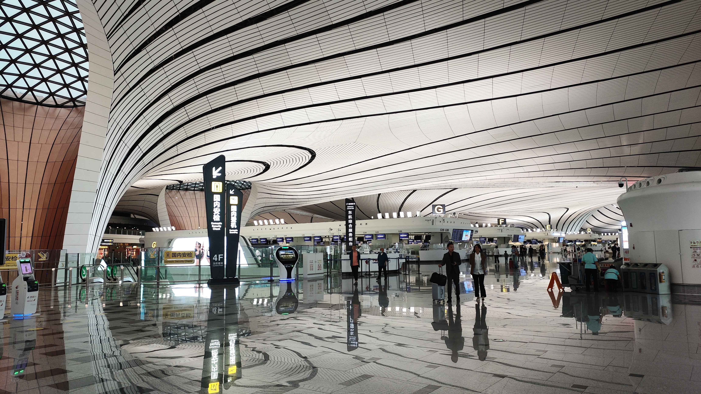
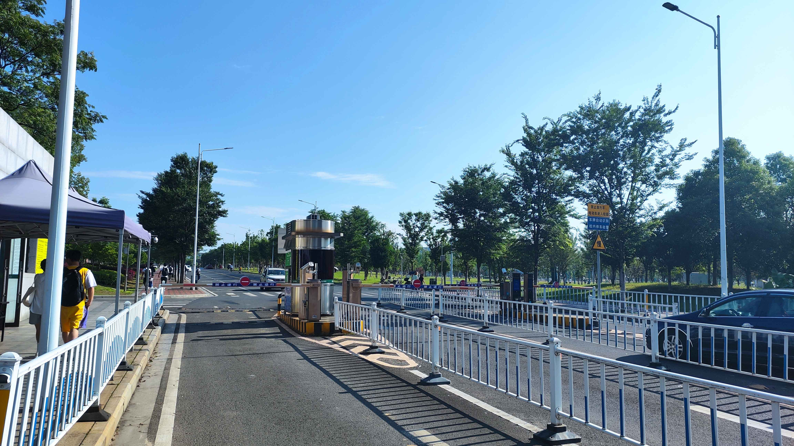
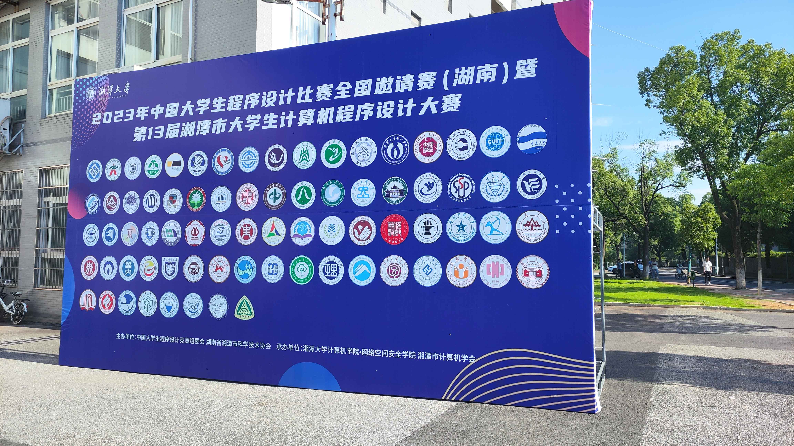
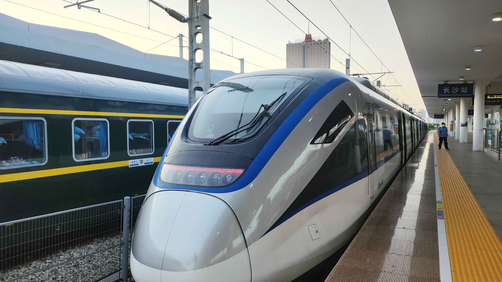
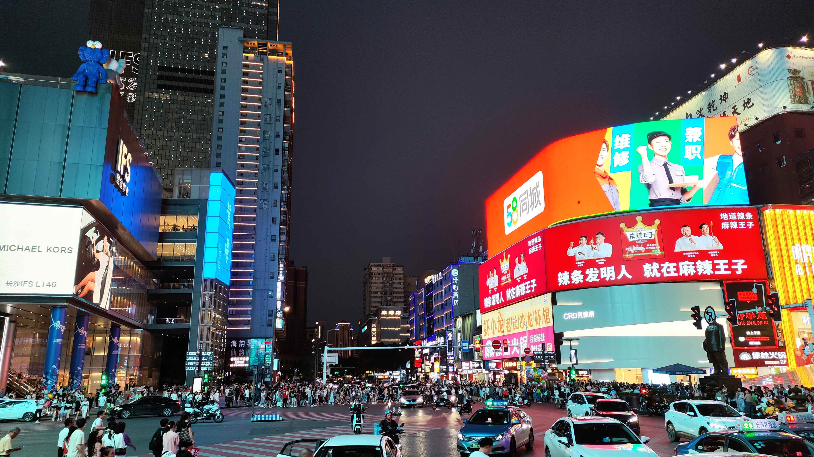
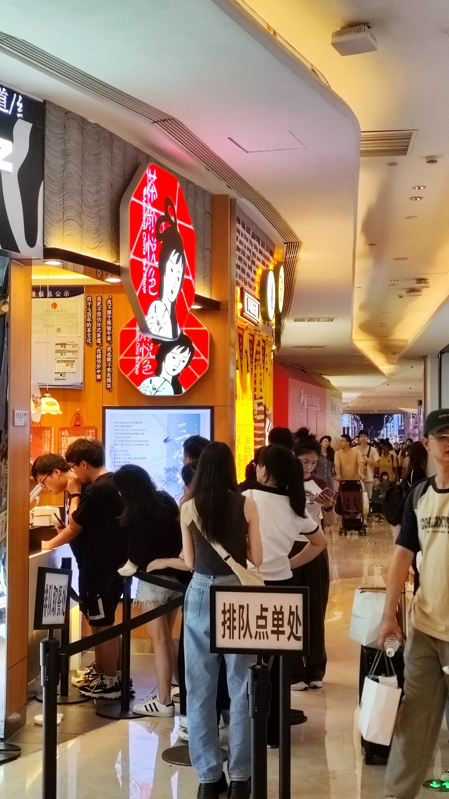
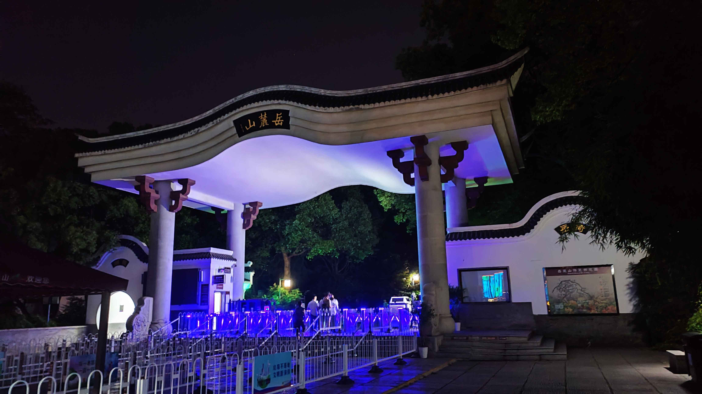
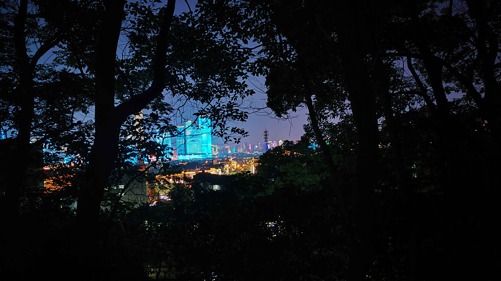
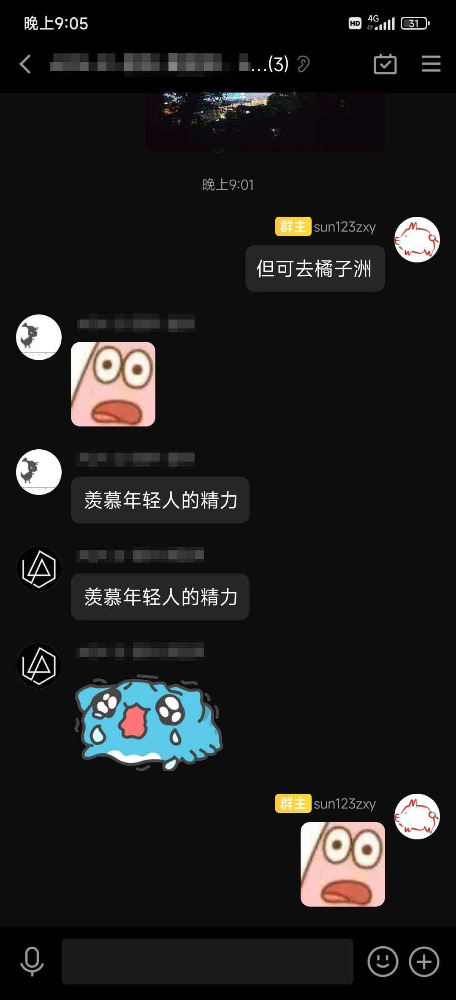
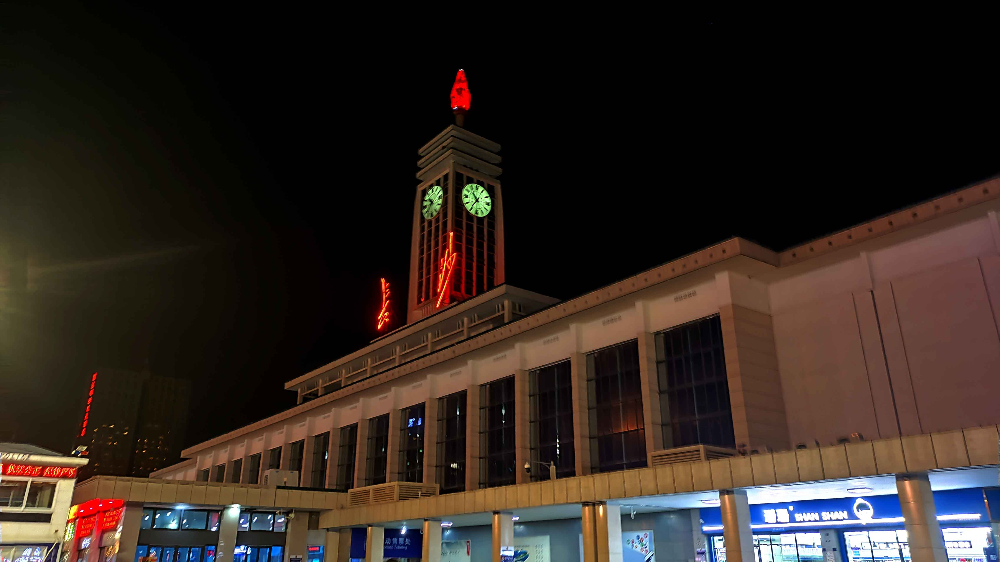

CCPC 2023 湘潭邀请赛游记
序
04:36，长沙返程的硬卧列车上。
禁不起隔壁大叔富有特色的鼾声，对着窗外发愣。
写写游记吧。
Day (-inf, 0)
由于 UCUP Taiwan 场神奇的发挥，意外获得湘潭邀请赛名额 x1。公费旅游万岁！
然而，飞机不给报，高铁不给报，软卧不给报，打车也不给报，路途时间高达 30h，还被迫翘掉周五周一头尾三节大课，体验并不良好。祸不单行，赛前十余日惊悉普物 27 日下午期末考试，若申请缓考，本学期的奖学金怕是无了。思量再三，还是想去，决定与队友兵分两路，考完直接空降长沙，再想办法到湘潭。晚上城铁已经收班，要是想当天到，恐怕只能高价打车了。这么算下来……
自费金额 +1000 : (
火车票意外地非常抢手，稍不留神，返程火车就只剩晚上 11 点半的了——赶上明天的早课是没必要再想了。不过，岳麓山橘子洲恰在长沙站西不远处，看看夜景也是不错的。
其它队伍似乎并不太着急……

最后竟因抢票太积极，被迫与大部队分道扬镳 : (
Day 0
去湘潭的路途并无太多亮点，感受是 \[ 1000 \text{CNY} = \text{飞机} + \text{打车} + \text{也不知道怎么回事反正莫名其妙就到了的体验} \]
从半径来看，大兴机场并没有想象中的大。但其空间设计非常有意思。雪花状的航站楼中间高两头低，下站点、值机、安检全部集中在中心区域，而航站楼、廊桥、登机口通过几只触角向远端延伸，空间利用率极高，极大地节省了转场行走花费的时间。

与队友联系，惊悉热身赛诸多不尽人意之处。这小破赛居然不用 DOMJudge？Pending 一发 20 min？评测机 32 位没 __int128？PE 是什么鬼东西？Dev C++ 只提供魔改版？VSCode 给了但机子带不动？……感觉不如校赛。希望不是所有 CCPC 都这样（
队友给看了道热身赛题说是签到数论，飞机上吭哧吭哧半天无果，结果发现被诈骗了，赛时场内一人未过（
到达 XX 电竞酒店，半夜。发现机子上竟有 Age of Empires 2——更神奇的是，队友竟突然指出 AoE2 是其机房的传统艺能！？小众中的小众，从未发现同好的 RTS/AoE 玩家落泪了。遗憾的是到得太晚，没来得及切磋一把。01:00 左右睡下。
Day 1
湖南的清晨从一碗米粉开始——味道不错，但口感并不太中意。
一出门才感受到湖南的湿热：湿度高达 90% 的头顶烈日，走上两分钟就汗水淋漓，可不比某火炉城市好到那里。已经可以想象无法洗澡就要登上返程火车的我们会有多臭了 : ( 。更别说湘潭大学惊人的大小，坚持到开幕式现场的根本就没几个队（


有气球（没有 CCPC 图标），有打印（比评测快），有汉堡套餐（没怎么认真吃），志愿者人手似乎不太够，每个考室甚至分不到一个监考。
随便开题。两位队友秒了 I 然后 J（牛！）。随机游走开题，L 感觉是什么大力数据结构嵌套，E 数学题玩了玩感觉并没有什么思路，但发现并秒了 H，然后第一梯队的签到题好像就做完了。继续随机游走，看了 G 以为队友做过，确认后发现并没有，那应该就不太容易了。看榜开 F，干碎臭长题面发现就是个基础随机运筹学期望 dp，队友灵魂提醒需要特判 \(B=1\)，成功 1A。这期间两位队友也开了 A 但一发 WA 一发 TLE——怎么会 T 呢？在此之间卡壳卡爆。三人干瞪眼贡献四发罚时浪费 1h，结果竟是 \(10^5\) 次 printf 在老爷评测上跑的太慢！写题的队友表示以后彻底切割 C 风格读写（
然后三人回头看之前和一位队友讨论一半的 K（J 是 K 的 checker 海星）。想到了 aa, bb, cc, …, ab, ac, ad, … 的构造方式，但在考虑后续延伸时莫名认为要继续移位构造超大置换环 abcde..., acegi...，于是开始大力计算 \(\sum_{i=0}^{25} \gcd(26,i)\)。队友打断吟唱，指出只需 \(\frac {25 \times 24}{2}\) 两位循环并在后面填充 z 即可，遂暴毙，决定先拿下汉堡套餐，然后继续游走摆烂。然而队友小脑转的比大脑快，光速敲完遗憾 WA，似乎他的特判有亿点多。调试无果，打印，换我重写。写得差不多了，两位队友合力调试突然成功，于是历经坎坷终于进入 6 题区。
距比赛结束还有一个半小时左右。看 B 看 D，深感星穹铁道题面之博大精深，决定搏一搏 L。上了个厕所发现会二维了，三维似乎也只是颗二维线段树，维护 max/min 判断当前操作方块是否平整 + 区间覆盖的修改操作即可。然而队友思路是神奇的二维扫描线，顿感自己非常不熟悉这种非标线段树。激烈讨论后，还是让擅长数据结构的队友按他熟悉的方法实现。然而队友实现一半算法竟然假了，又紧急更换写法，此前表现正常的电脑突然开始变卡，三个人对着电脑大吼大叫，最后 2 min 写完了代码！F11！输出“No”！摆！
第一次外出比赛就这样结束了。比较遗憾的，无疑是 A printf 吃的四发罚时了。给你校老爷评测机跪了（
滚榜环节的操作非常迷惑，不从奖牌区滚起，又跳过了 Cu Ag 区，滚了个寂寞。因为老爷评测机的原因，封榜前后的排名也几乎没有发生变化。6 题金银铜，这是我能见着的区分度吗（
最后冠军颁奖倒意外地有节目效果。主持人抑扬顿挫念出“梦想天生”，BGM 和掌声突然响起，恍惚有 Dream Battle 前奏噔噔咚，灵梦按在地上揍的感觉（
Day 1 赛后
返程继续暴汗。从湘潭乘城铁至长沙。

队友来时已经踩好点了，拉着啥也不知道的我就往五一广场走……


队友在前面慢悠悠地寻找吃饭的地方，看上去是准备边吃边坐挨到火车到点了。还想出去逛逛，于是暂时各奔东西。街边随便点了份牛杂面（超辣！）和臭豆腐（完全不臭），乘地铁二号线至橘子洲西岸，向岳麓山前进。然而功课未做充足，到达山门才发现索道已停，大巴收班。天色已晚，爬上去显然赶不上 11 点半的火车，只好悻悻而去。


然而……

于是从麓山路返回，上至橘子洲大桥。由此可直接步行至江心的橘子洲。
时间来到 10 点整。准备返程。地铁至五一广场，与队友汇合，前往长沙站。

疲惫，忘记买早饭就过安检了。候车大厅已无空位，站着闲聊了小会儿，时间到了。之前车上刷夜的豪言壮语早已抛之脑后，上车一躺——Day 1, end.
upd x1: 酒店登录过 Steam 的群友都被盗号了 \(\Sigma ( \supset \mathrm{O} _\frown \mathrm{O} ) \supset\)
upd x2: 报销疑似仍然有戏，感谢学校感谢党 \(\Sigma ( \supset \mathrm{O} _\smile \mathrm{O} ) \supset\)
补题
L
需要注意的是，四分树 / K-D 树不存在时间复杂度优秀的区间修改。对于任意区间修改，树套树的实现是必要的。
L 其实有基于差分的非常容易的解法，见解法二。随机分划长度的类似 hash 的解法三也非常震撼。